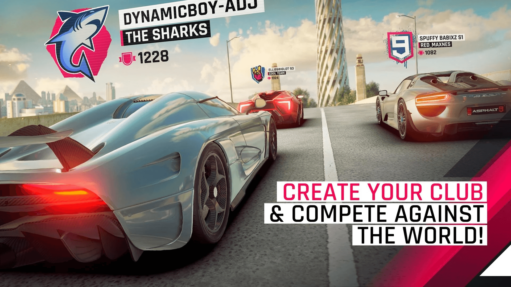

Now You Can Create Your Club and Compete Against The World!
15 May 2024 Now you can create your own club in Asphalt 9 and take your racing experience to the next level by competing against players from all over the globe. Form a club with your friends or join an existing one to collaborate and strategize for dominance. Participate in exclusive club events and challenges to earn rewards and climb the club leaderboards. Show the world your racing skills, teamwork, and determination as you strive to make your club the best in the international arena. Whether you're racing for fun or aiming for the top, creating a club adds a new dimension of excitement and competition to your Asphalt 9 journey.
In the exhilarating world of Asphalt 9, creating your own club opens up a realm of possibilities. Collaborate with fellow club members to unlock exclusive perks, such as special in-game rewards and personalized club emblems. Compete in adrenaline-fueled club tournaments and events, where teamwork and coordination are paramount. With each victory, your club's reputation grows, attracting new members and solidifying your place among the elite racers. Whether you're strategizing for global domination or simply enjoying the camaraderie of like-minded enthusiasts, the Asphalt 9 club feature offers endless opportunities for excitement and achievement on the virtual racetrack.
Go Back